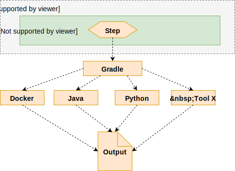
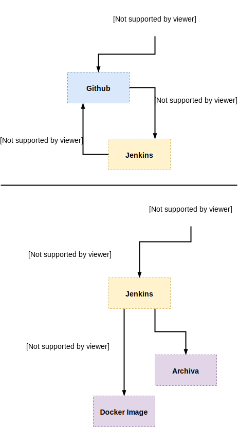
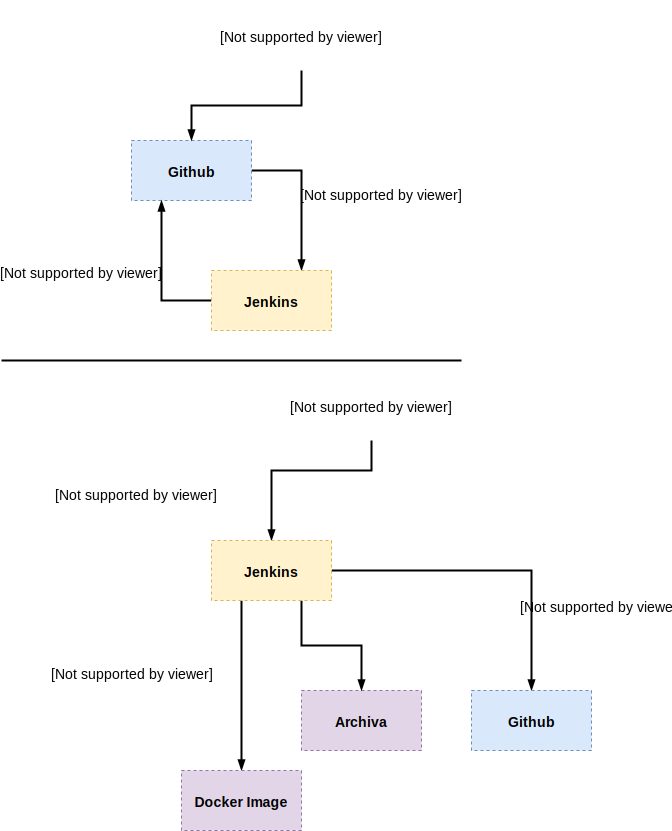

Jenkins CI
The role of Jenkins in the ATTX development infrastructure:
- Jenkins triggers, orchestrates, executes and monitors running of Gradle tasks using pipelines;
- Gradle tasks are used to implement all the required actions related to pipelines (e.g.
:buildDockerImage, running integration tests, deploying artifacts).
So instead of using Jenkins plugin to call Docker and create images, we should create a Gradle task that uses Docker and call that task from a Jenkins pipeline.
Orchestration is handled using Jenkins pipelines that all should share some of the common stages listed below.

Figure 1. Roles of Jenkins, Gradle and tools (i.e. Docker, java etc.)
Table of Contents
There are two types of flows:
/feature-* branchto/devbranch/devbranch to/masterbranch
Either one can be solved with Gradle plugins or Github hooks
The image below describes the build and deploy workflow from a /feature-name branch to /dev branch.

Figure 2. Dev releases branch build workflow
The image below describes the build and deploy workflow from a /dev branch to /master branch.

Figure 3. Master branch releases build workflow
Stages
Example configuration:
pipeline {
agent any
stages {
stage('Checkout') { // for display purposes
steps {
// Get some code from a GitHub repository
git branch: 'dev', url: 'https://github.com/ATTX-project/platform-deployment.git'
}
}
stage('Compile/Package/Test') {
steps {
echo sh (script: "${GRADLE_HOME}/bin/gradle --console=plain -b ${workspace}/build.gradle -PregistryURL=attx-dev:5000 -PartifactRepoURL=http://archiva:8080 -Penv=dev -PtestEnv=CI :pd-feature-tests:clean :pd-feature-tests:runContainerTests", returnStdout: true)
}
post {
always {
echo 'publishing reports'
publishHTML target: [
allowMissing: false,
alwaysLinkToLastBuild: false,
keepAll: false,
reportDir: 'pd-feature-tests/build/reports/tests/integTest',
reportFiles: 'index.html',
reportName: 'pd-feature-tests-reports'
]
}
failure {
echo sh (script: "${GRADLE_HOME}/bin/gradle --console=plain -b ${workspace}/build.gradle -PregistryURL=attx-dev:5000 -PartifactRepoURL=http://archiva:8080 -Penv=dev -PtestEnv=CI :pd-feature-tests:clean :pd-feature-tests:removeImages", returnStdout: true)
}
}
}
}
}
In the following we will be breaking down the configuration steps and expected output.
Checkout
Getting the code from Github, repository.
Example:
git branch: 'dev', url: 'https://github.com/ATTX-project/distribution-component.git'
Compile/Package/Test
Example:
echo sh (script: "${GRADLE_HOME}/bin/gradle --console=plain -b ${workspace}/build.gradle -PregistryURL=attx-dev:5000 -PartifactRepoURL=http://archiva:8080 -Penv=dev -PtestEnv=CI :pd-feature-tests:clean :pd-feature-tests:runContainerTests", returnStdout: true)
We need both "echo" and returnStdout: true to get the output of the Gradle execution to Jenkins logs.
Deploy artifacts
Copies output artifacts to somewhere where they can be used by other pipelines.
Example:
archiveArtifacts artifacts: 'dc-elasticsearch-siren/attx-api-plugin/build/libs/*.jar', onlyIfSuccessful: true
Publish reports
Copies output of HTML reports to somewhere where Jenkins can access them. It is important for the results to be displayed even if there was a failure in the build process in order to achieve such functionality we use the syntax provided by Jenkins: https://jenkins.io/doc/book/pipeline/syntax/#post
Example: publishing test reports
{
publishHTML target: [
allowMissing: false,
alwaysLinkToLastBuild: false,
keepAll: false,
reportDir: 'pd-feature-tests/build/reports/tests/integTest',
reportFiles: 'index.html',
reportName: 'pd-feature-tests-reports'
]
}
Build image
Artifacts are accessed from Jenkins. Normally artifacts are restricted to authenticated clients, but this can be changed by first setting property hudson.security.ArtifactsPermission = true (https://issues.jenkins-ci.org/browse/JENKINS-1871 and https://wiki.jenkins-ci.org/display/JENKINS/Features+controlled+by+system+properties) and then giving everyone access to the artifacts in the Jenkins security matrix.
Other option is to set "Allow anonymous read access" in the security settings.
Failure
Some of the pipelines required a failure step, more precisely the integration test related tasks, as the tasks created and run containers. In case of failure of correctly executing the Compile/Package/Test task, the containers are not removed and the task is stopped mid execution, thus such a "post execution" task is required.
Plugins
Listing existing plugins can be done via https://stackoverflow.com/a/35292719
Additions to the Jenkins image
Jenkins container must be linked to the pivy repository container:
docker run -d --restart=always --link pivy_repo:pivyrepo -v /var/run/docker.sock:/var/run/docker.sock -v $(which docker):/usr/bin/docker -p 49001:8080 -v /data/jenkins:/var/jenkins_home -t attxproject/attx-jenkins
The following packages needs to added in order to make use of the libXML in any of the Python projects:
apt-get install libxml2-dev libxslt1-dev python-devapt-get install build-essentialapt-get install zlib1g-dev
In order to build Maven/Java projects, we need it to be installed:
apt-get install -y maven
In order to build Node.js projects, we need it to be installed:
apt-get install -y nodejs